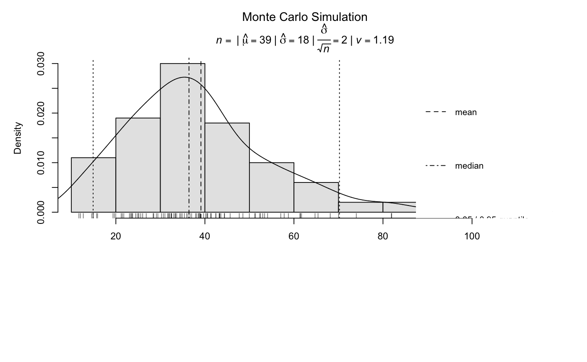

Estimate the number of grains on an aliquot. Alternatively, the packing density of an aliquot is computed.
calc_AliquotSize( grain.size, sample.diameter, packing.density = 0.65, MC = TRUE, grains.counted, plot = TRUE, ... )
| grain.size | numeric (required):
mean grain size (microns) or a range of grain sizes from which the
mean grain size is computed (e.g. |
|---|---|
| sample.diameter | numeric (required): diameter (mm) of the targeted area on the sample carrier. |
| packing.density | numeric (with default):
empirical value for mean packing density. |
| MC | logical (optional):
if |
| grains.counted | numeric (optional):
grains counted on a sample carrier. If a non-zero positive integer is provided this function
will calculate the packing density of the aliquot. If more than one value is
provided the mean packing density and its standard deviation is calculated.
Note that this overrides |
| plot | logical (with default):
plot output ( |
| ... | further arguments to pass ( |
Returns a terminal output. In addition an RLum.Results object is returned containing the following element:
data.frame summary of all relevant calculation results.
list used arguments
call the function call
list results of the Monte Carlo simulation
This function can be used to either estimate the number of grains on an aliquot or to compute the packing density depending on the the arguments provided.
The following function is used to estimate the number of grains n:
$$n = (\pi*x^2)/(\pi*y^2)*d$$
where x is the radius of the aliquot size (microns), y is the mean
radius of the mineral grains (mm) and d is the packing density
(value between 0 and 1).
Packing density
The default value for packing.density is 0.65, which is the mean of
empirical values determined by Heer et al. (2012) and unpublished data from
the Cologne luminescence laboratory. If packing.density = "Inf" a maximum
density of \(\pi/\sqrt12 = 0.9068\ldots\) is used. However, note that
this value is not appropriate as the standard preparation procedure of
aliquots resembles a PECC ("Packing Equal Circles in a Circle") problem
where the maximum packing density is asymptotic to about 0.87.
Monte Carlo simulation
The number of grains on an aliquot can be estimated by Monte Carlo simulation
when setting MC = TRUE. Each of the parameters necessary to calculate
n (x, y, d) are assumed to be normally distributed with means
\(\mu_x, \mu_y, \mu_d\) and standard deviations \(\sigma_x, \sigma_y, \sigma_d\).
For the mean grain size random samples are taken first from \(N(\mu_y, \sigma_y)\), where \(\mu_y = mean.grain.size\) and \(\sigma_y = (max.grain.size-min.grain.size)/4\) so that 95\ grains are within the provided the grain size range. This effectively takes into account that after sieving the sample there is still a small chance of having grains smaller or larger than the used mesh sizes. For each random sample the mean grain size is calculated, from which random subsamples are drawn for the Monte Carlo simulation.
The packing density is assumed
to be normally distributed with an empirically determined \(\mu = 0.65\)
(or provided value) and \(\sigma = 0.18\). The normal distribution is
truncated at d = 0.87 as this is approximately the maximum packing
density that can be achieved in PECC problem.
The sample diameter has
\(\mu = sample.diameter\) and \(\sigma = 0.2\) to take into account
variations in sample disc preparation (i.e. applying silicon spray to the
disc). A lower truncation point at x = 0.5 is used, which assumes
that aliqouts with smaller sample diameters of 0.5 mm are discarded.
Likewise, the normal distribution is truncated at 9.8 mm, which is the
diameter of the sample disc.
For each random sample drawn from the
normal distributions the amount of grains on the aliquot is calculated. By
default, 10^5 iterations are used, but can be reduced/increased with
MC.iter (see ...). The results are visualised in a bar- and
boxplot together with a statistical summary.
0.31
Burow, C., 2020. calc_AliquotSize(): Estimate the amount of grains on an aliquot. Function version 0.31. In: Kreutzer, S., Burow, C., Dietze, M., Fuchs, M.C., Schmidt, C., Fischer, M., Friedrich, J., Riedesel, S., Autzen, M., Mittelstrass, D., 2020. Luminescence: Comprehensive Luminescence Dating Data Analysis. R package version 0.9.9. https://CRAN.R-project.org/package=Luminescence
Duller, G.A.T., 2008. Single-grain optical dating of Quaternary sediments: why aliquot size matters in luminescence dating. Boreas 37, 589-612.
Heer, A.J., Adamiec, G., Moska, P., 2012. How many grains are there on a single aliquot?. Ancient TL 30, 9-16.
Further reading
Chang, H.-C., Wang, L.-C., 2010. A simple proof of Thue's Theorem on Circle Packing. https://arxiv.org/pdf/1009.4322v1.pdf, 2013-09-13.
Graham, R.L., Lubachevsky, B.D., Nurmela, K.J., Oestergard, P.R.J., 1998. Dense packings of congruent circles in a circle. Discrete Mathematics 181, 139-154.
Huang, W., Ye, T., 2011. Global optimization method for finding dense packings of equal circles in a circle. European Journal of Operational Research 210, 474-481.
Christoph Burow, University of Cologne (Germany) , RLum Developer Team
## Estimate the amount of grains on a small aliquot calc_AliquotSize(grain.size = c(100,150), sample.diameter = 1, MC.iter = 100)#> #> [calc_AliquotSize] #> #> --------------------------------------------------------- #> mean grain size (microns) : 125 #> sample diameter (mm) : 1 #> packing density : 0.65 #> number of grains : 42 #> #> --------------- Monte Carlo Estimates ------------------- #> number of iterations (n) : 100 #> median : 40 #> mean : 42 #> standard deviation (mean) : 20 #> standard error (mean) : 2 #> 95% CI from t-test (mean) : 38 - 46 #> standard error from CI (mean): 2 #> ---------------------------------------------------------## Calculate the mean packing density of large aliquots calc_AliquotSize(grain.size = c(100,200), sample.diameter = 8, grains.counted = c(2525,2312,2880), MC.iter = 100)#> #> Monte Carlo simulation is only available for estimating the amount of grains on the sample disc. Automatically set to FALSE. #> #> [calc_AliquotSize] #> #> --------------------------------------------------------- #> mean grain size (microns) : 150 #> sample diameter (mm) : 8 #> mean counted grains : 2572 #> mean packing density : 0.904 #> standard deviation : 0.101 #> ---------------------------------------------------------